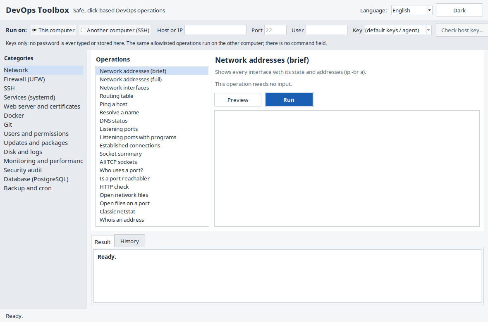

linux-scripts — პრაქტიკული Linux ხელსაწყოები კონკრეტული ამოცანებისთვის; თითო საქაღალდე, თითო README; უმეტესს აქვს ფანჯარა (EN / ქართული) და ბრძანების ხაზი. MIT ლიცენზია. ფაქტები გადამოწმებულია 2026-11-21-ზე. [აქ დაამატე შენი სიტყვები]linux-scripts — practical Linux utilities for specific tasks; one folder and one README each; most have a window (EN / Georgian) and a command line. MIT license. Facts checked on 2026-11-21. [Add your own words here]
იდეაThe idea
ერთი ამოცანა — ერთი ხელსაწყოOne task, one tool
თითო საქაღალდე, თითო README; ერთმანეთისგან დამოუკიდებლად გამოიყენება
უმეტესს აქვს პატარა ფანჯარა (EN / ქართული) და ბრძანების ხაზიც
დაყენება root-ის გარეშეც შეიძლება: ./install.sh --prefix ~/.local all
One folder and one README each; usable on their own
Most have a small window (EN / Georgian) and a command line
Can be installed without root: ./install.sh --prefix ~/.local all
სურათი — „Toolkit Installer“-ის ფანჯარა (ნამდვილი ეკრანის სურათი, ზედა ნაწილი). წყარო: README.The image is the “Toolkit Installer” window (a real screenshot, top part). Source: README.
ხელსაწყოებიTools
რა შედის კრებულშიWhat is in the toolkit
ხელსაწყოTool
რას აკეთებსWhat it does
usb-eject
USB დისკის უსაფრთხო გამორთვაSafely unmount and power off USB drives
wifi-hotspot
WPA2 Wi-Fi hotspot ნაბიჯ-ნაბიჯ, QR კოდი, მოწყობილობებიWPA2 Wi-Fi hotspot step by step, QR code, connected devices
printer-setup
პრინტერის შეერთებიდან სატესტო გვერდამდეFrom “plugged in a printer” to “test page printed”
QGIS-ის დაყენება შენი არჩევანითInstall QGIS the way you choose
installer
ერთი ფანჯარა მრავალი პროგრამის დასაყენებლად და კრებულის განახლებისთვისOne window to install many programs and update the toolkit
shortcuts
ხელსაწყოების იარლიყები სამუშაო მაგიდაზეLaunchers on the Desktop
devops-toolbox
DevOps ოპერაციები დაწკაპუნებით, ბრძანების აკრეფის გარეშეDevOps operations by click, without typing commands
წყარო: README, ხელსაწყოების ცხრილი. bluetooth-setup ცალკე რეპოზიტორიაში გადავიდა (2026-11-15).Source: README, tools table. bluetooth-setup moved to its own repository (2026-11-15).
გეოგრაფებისთვისFor geographers
QGIS-ის დაყენება ისე, როგორც შენ აირჩევInstalling QGIS the way you choose
A simulation first, going back to an older version, a doctor, an offline copy
სურათი — qgis-installer-ის ფანჯარა (ნამდვილი ეკრანის სურათი, ამ კომპიუტერზე). წყარო: README და commit-ები 2026-10-15/16 („components“, „look before you install“, „the doctor“, „offline copy“).The image is the qgis-installer window (a real screenshot, on this computer). Source: README and commits of 2026-10-15/16 (“components”, “look before you install”, “the doctor”, “offline copy”).
GIS კატალოგიGIS catalogue
GIS პროგრამები ერთ ფანჯარაშიGIS programs in one window
„GIS toolbox“ ჩანართი: QGIS დისტრიბუციიდან ან Flathub-იდან (stable და LTR), SAGA, SpatiaLite
GIS კატალოგი (OSGeo და საზოგადოების პროექტები) და OpenGeos ბარათები
ფანჯარა ამბობს, რას ვერ დააყენებ შენს სისტემაზე და რატომ
A “GIS toolbox” tab: QGIS from the distribution or Flathub (stable and LTR), SAGA, SpatiaLite
A GIS catalogue (OSGeo and community projects) and OpenGeos cards
The window says what your system cannot get and why
წყარო: CHANGELOG (2026-10-26 … 11-08 და 2026-11-09 … 15): „GIS catalogue“, „OpenGeos card browser“, „GIS toolbox tab“, „the installer says what a system can get and why“.Source: CHANGELOG (2026-10-26 … 11-08 and 2026-11-09 … 15): “GIS catalogue”, “OpenGeos card browser”, “GIS toolbox tab”, “the installer says what a system can get and why”.
უსაფრთხოებაSafety
ფრთხილი დაყენება და განახლებაCareful install and update
install.sh არასოდეს გადაწერს ან წაშლის ფაილს, რომელიც მას არ ჩაუწერია
ჩაწერილი ფაილები (გზა და SHA-256) ინახება manifest-ში; არის --dry-run
get.sh უარს ამბობს არქივზე, რომელშიც ბმულებია ან საქაღალდიდან გამოსული გზები
განახლება: git-ით, git-ის გარეშე (ატომური ჩანაცვლება, ძველი ვერსიის ასლი) ან USB ასლიდან
install.sh never overwrites or removes a file it did not write
Installed files (path and SHA-256) go into a manifest; there is a --dry-run
get.sh refuses archives with links or paths that leave the folder
Update: with git, without git (atomic replace, backup of old files) or from a USB copy
წყარო: README („Install“, „Update“) და CHANGELOG 2026-11-16 („safer updates, installs and CI“).Source: README (“Install”, “Update”) and CHANGELOG 2026-11-16 (“safer updates, installs and CI”).
DevOpsDevOps
DevOps Toolbox: ოპერაციები დაწკაპუნებითDevOps Toolbox: operations by click

არ არის ტერმინალი: ყოველი ოპერაცია კოდშია, თავად ამოწმებს შეყვანას; გაშვებამდე ჩანს ზუსტი ბრძანება (Preview)
A window and a local web page on one backend; also another computer over SSH (keys only)
სურათი — DevOps Toolbox-ის ფანჯარა (ნამდვილი ეკრანის სურათი). წყარო: devops-toolbox README და CHANGELOG („Unreleased“: 146 ოპერაცია, SSH).The image is the DevOps Toolbox window (a real screenshot). Source: devops-toolbox README and CHANGELOG (“Unreleased”: 146 operations, SSH).
ბეჭდვაPrinting
PrintHub: ბეჭდვა Linux-ზეPrintHub: printing on Linux
PDF, სურათები და Office ფაილები; წინასწარი ხედი და ბეჭდვის სრული პარამეტრები
ფოტო რეჟიმი: მთელი ფურცელი / მთელი ფოტო / ზუსტი ზომა / ნამდვილი ზომა, არეები, გამეორება ფურცელზე
Qt-ის გამო `all`-ში არ შედის (≈200 MB საკუთარი venv)
PDF, images and Office files; a preview and full print settings
Photo mode: fill / whole / exact sizes / actual size, margins, repeat on a sheet
Not part of `all` because of Qt (≈200 MB private venv)
წყარო: printhub README და CHANGELOG („PrintHub photo mode“). PrintHub-ის ეკრანის სურათები რეპოში ამ კომპიუტერზე ქართულ ტექსტს ვერ ხატავს, ამიტომ აქ არ ჩავსვი.Source: printhub README and CHANGELOG (“PrintHub photo mode”). The PrintHub screenshots in the repo do not render text correctly on this computer, so they are not shown here.
რა დავადასტურეთWhat is verified
რა არის შემოწმებული და რა — არაWhat is checked and what is not
CI ამოწმებს Debian 12, Ubuntu 22.04 და 24.04, Fedora, Arch, openSUSE Tumbleweed და Alpine-ზე; Python 3.8–3.13
ruff, shellcheck, compileall; ტესტები იყენებს ყალბ აპარატურას და რეალურ მოწყობილობას არ ეხება
hotspot გამოცდილია ერთ მანქანაზე: Linux Mint XFCE + Dell Precision M4700; სხვა აპარატურაზე — დაუდასტურებელია
CI checks Debian 12, Ubuntu 22.04 and 24.04, Fedora, Arch, openSUSE Tumbleweed and Alpine; Python 3.8–3.13
ruff, shellcheck, compileall; tests use fakes and never touch real hardware
The hotspot was tried on one machine: Linux Mint XFCE + Dell Precision M4700; other hardware is unverified
წყარო: README, „Supported systems“ და wifi-hotspot README. პატიოსანი სტატუსი: აპარატურაზე დამოკიდებული ხელსაწყოები იმდენადაა დადასტურებული, რამდენადაც მათ README-ში წერია.Source: README, “Supported systems” and the wifi-hotspot README. Honest status: hardware-specific tools are only as verified as their README says.
ქრონოლოგიაTimeline
5 კვირა: ძირითადი ეტაპები5 weeks: key milestones
თარიღიDate
ეტაპიMilestone
2026-10-14
usb-eject, wifi-hotspot, printer-setup და qgis-installerusb-eject, wifi-hotspot, printer-setup and qgis-installer
2026-10-16
PrintHub, იარლიყები და „installer“ ფანჯარაPrintHub, shortcuts and the installer window
2026-10-17
განახლება git-ის გარეშე და get.shUpdating without git and get.sh
2026-10-18
OpenGeos ბარათებიOpenGeos cards
2026-11-01
Flutter-ის ხელსაწყოები და CI-ის გამართვაFlutter tools and CI tuning
ბოლო ნახული pull request; ყოველი ცვლილება CI-ს გადისlatest pull request seen; every change passes CI
8
ხელსაწყო კრებულშიtools in the toolkit
ციფრები git ისტორიიდანაა: „Co-Authored-By: Claude“ ხაზებიNumbers come from git history: “Co-Authored-By: Claude” lines
194 commit-იდან 128 შეიცავს „Co-Authored-By: Claude“ ხაზს; დანარჩენები, მათ შორის merge commit-ები, არა. [აქ დაამატე შენი სიტყვები]128 of 194 commits contain a “Co-Authored-By: Claude” line; the rest, including merge commits, do not. [Add your own words here]
ამბავი 1Story 1
CI, რომელმაც qgis.org დატვირთაCI that hammered qgis.org
qgis-installerqgis-installer
პრობლემაProblem
ავტომატური შემოწმებები qgis.org-იდან ჩამოტვირთვებს ცდილობდა — ერთდროულად ბევრი გაშვებაAutomated checks downloaded from qgis.org — many runs at once
როგორ დამეხმარა AIHow AI helped
დავინახეთ, რომ ერთსა და იმავე ცვლილებაზე ორი გაშვება იყო; ახლა ტესტი ერთხელ ეშვებაWe saw that one change ran twice; now the tests run once
შედეგიResult
მხოლოდ pull request-ზე ეშვება; push — მხოლოდ main-ზეTests run on the pull request; pushes only on main
გაკვეთილი: ავტომატური შემოწმებაც უნდა იყოს კეთილგანწყობილი სხვისი სერვერებისადმიLesson: Automated checks should be polite to other people’s servers
git: 2026-11-01
commit-ის ტექსტი პირდაპირ ამბობს, რომ დუბლირებული გაშვებები qgis.org-ს „ამძიმებდა“.
commits: 2026-11-01: CI: test branches once (pull_request), push only on main - duplicate concurrent runs hammered qgis.org
[აქ დაამატე შენი სიტყვები]The commit text says directly that duplicate runs “hammered” qgis.org.
commits: 2026-11-01: CI: test branches once (pull_request), push only on main - duplicate concurrent runs hammered qgis.org
[Add your own words here]
ამბავი 2Story 2
განახლება არ უნდა გატეხავდესAn update must not break things
Toolkit InstallerToolkit Installer
პრობლემაProblem
git-ის გარეშე განახლებამ შეიძლებოდა ფაილები არასწორ ადგილას ჩაეწერა ან ბმული გადაეწერაAn update without git could write files in the wrong place or write through a symbolic link
როგორ დამეხმარა AIHow AI helped
განახლება ახლა ჯერ გადაამოწმებს არქივს, ფაილებს ცვლის ატომურად და ჩავარდნისას უკან აბრუნებსAn update now checks the archive first, replaces files atomically and rolls back on failure
შედეგიResult
არქივები ბმულებითა და გზებით საქაღალდის გარეთ უარყოფილია; ძველი ფაილების ასლი ინახებაArchives with links or escaping paths are refused; old files are backed up
გაკვეთილი: უსაფრთხოება ნიშნავს ცუდ სცენარებზე ფიქრს ჯერ კიდევ კოდის დაწერამდეLesson: Security means thinking about the bad cases before writing the code
git: 2026-11-15 → 16
წყარო: CHANGELOG 2026-11-16 („Security“ ჩანაწერები).
commits: 2026-11-15: Merge pull request #51 from kapo-Toolkits/fix/safe-update · CHANGELOG 2026-11-16: Security — install.sh no longer overwrites or removes files that are not its own; the no-git updater and get.sh no longer write through symbolic links
[აქ დაამატე შენი სიტყვები]Source: CHANGELOG 2026-11-16 (“Security” entries).
commits: 2026-11-15: Merge pull request #51 from kapo-Toolkits/fix/safe-update · CHANGELOG 2026-11-16: Security — install.sh no longer overwrites or removes files that are not its own; the no-git updater and get.sh no longer write through symbolic links
[Add your own words here]
ამბავი 3Story 3
ავტომატური შემოწმება და გასწორებაAutomatic checks and fixes
DevOps ToolboxDevOps Toolbox
პრობლემაProblem
სკრიპტების კრებული დიდდებოდა და უნდა გვენახა, რა ირღვეოდა სხვადასხვა Python ვერსიაზეThe collection of scripts grew and we needed to see what broke on different Python versions
როგორ დამეხმარა AIHow AI helped
დავამატეთ ruff, shellcheck, compileall და Python 3.8–3.13 მატრიცა; ის, რაც ნაპოვნი იყო, იმავე დღეს გავასწორეთWe added ruff, shellcheck, compileall and a Python 3.8–3.13 matrix; what they found was fixed the same day
შედეგიResult
მაგ.: plugin-ების სკანირება Python 3.8/3.9-ზე სტანდარტულ ბიბლიოთეკას პაკეტად ასახელებდაE.g. plugin scanning on Python 3.8/3.9 reported the standard library as packages
გაკვეთილი: ავტომატურმა შემოწმებამ ისეთი ხარვეზი აჩვენა, რომელიც ხელით ვერ შევამჩნიეთLesson: The automated check showed a defect we could not see by hand
git: 2026-11-15
წყარო: commit და CHANGELOG 2026-11-16 („Fixed plugin scanning on Python 3.8/3.9“).
commits: 2026-11-15: CI: ruff, shellcheck on every .sh, compileall on every tool, Python 3.8-3.13 matrix; fix what they found
[აქ დაამატე შენი სიტყვები]Source: the commit and CHANGELOG 2026-11-16 (“Fixed plugin scanning on Python 3.8/3.9”).
commits: 2026-11-15: CI: ruff, shellcheck on every .sh, compileall on every tool, Python 3.8-3.13 matrix; fix what they found
[Add your own words here]
QR კოდი გადაგიყვანთ GitHub რეპოზიტორიაში. დაყენება: get.sh ან ./install.sh.The QR code leads to the GitHub repository. Install with get.sh or ./install.sh.